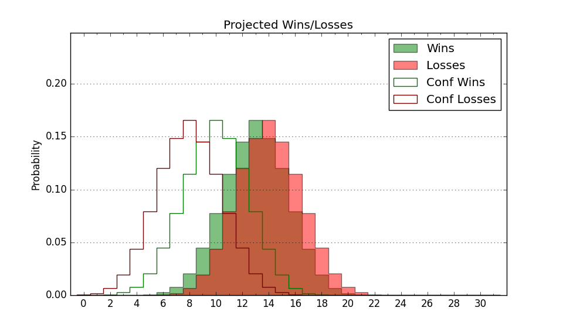

| Home | Game Probabilities | Conferences | Preseason Predictions | Odds Charts | NCAA Tournament |
| City: | Bethlehem, Pennsylvania | |
| Conference: | Patriot (1st)
| |
| Record: | 0-0 (Conf) 3-6 (Overall) | |
| Ratings: | Comp.: -8.4 (252nd) Net: -8.7 (261st) Off: 105.4 (172nd) Def: 114.0 (326th) SoR: 0.0 (185th) |
| Remaining | ||||||
|---|---|---|---|---|---|---|
| Date | Opponent | Win Prob | Pred. | |||
| 1/2 | Bucknell (228) | 60.2% | W 72-69 | |||
| 1/5 | @ Loyola MD (303) | 45.8% | L 72-74 | |||
| 1/8 | @ Colgate (273) | 38.3% | L 70-73 | |||
| 1/11 | Army (300) | 73.5% | W 78-71 | |||
| 1/15 | @ Boston University (264) | 36.8% | L 67-71 | |||
| 1/18 | Loyola MD (303) | 74.2% | W 77-69 | |||
| 1/22 | @ American (247) | 34.5% | L 69-73 | |||
| 1/25 | Lafayette (283) | 70.6% | W 73-67 | |||
| 1/29 | Navy (335) | 81.0% | W 81-70 | |||
| 2/1 | @ Holy Cross (293) | 43.4% | L 73-75 | |||
| 2/3 | Colgate (273) | 67.9% | W 74-69 | |||
| 2/8 | American (247) | 64.3% | W 73-69 | |||
| 2/12 | @ Navy (335) | 55.6% | W 76-75 | |||
| 2/15 | Holy Cross (293) | 72.3% | W 77-71 | |||
| 2/17 | @ Bucknell (228) | 30.8% | L 68-74 | |||
| 2/22 | @ Lafayette (283) | 41.4% | L 69-72 | |||
| 2/26 | Boston University (264) | 66.5% | W 71-67 | |||
| 3/1 | @ Army (300) | 44.9% | L 74-75 | |||
| Previous | Game Score | |||||
| Date | Opponent | Win Prob | Result | Off | Def | Net |
| 11/4 | @Northwestern (41) | 3.2% | L 46-90 | -18.8 | -8.2 | -27.0 |
| 11/6 | @Georgetown (90) | 8.7% | L 77-85 | 11.5 | -2.4 | 9.0 |
| 11/12 | @Columbia (169) | 21.3% | L 75-76 | 15.4 | 3.5 | 18.9 |
| 11/15 | @UCLA (22) | 2.1% | L 45-85 | -11.9 | -9.3 | -21.1 |
| 11/26 | @St. Francis PA (313) | 49.4% | L 78-88 | 3.1 | -21.0 | -17.9 |
| 11/30 | Marist (227) | 60.2% | W 74-69 | 7.9 | -6.9 | 1.1 |
| 12/4 | Monmouth (282) | 69.9% | W 90-63 | 19.0 | 13.8 | 32.8 |
| 12/7 | @Dayton (42) | 3.3% | L 62-86 | 4.3 | -9.8 | -5.5 |
| 12/21 | @LIU Brooklyn (345) | 58.8% | W 60-59 | -18.6 | 16.1 | -2.5 |
| Stats & Trends | |||||
|---|---|---|---|---|---|
| Current | Day | Week | Month | Season | |
| Composite | -8.4 | +0.0 | +0.1 | +3.2 | -0.7 |
| Comp Rank | 252 | +4 | -- | +34 | -12 |
| Net Efficiency | -8.7 | +0.1 | +0.2 | +6.8 | -- |
| Net Rank | 261 | +2 | -1 | +46 | -- |
| Off Efficiency | 105.4 | +0.1 | +0.2 | +0.9 | -- |
| Off Rank | 172 | +1 | +2 | -2 | -- |
| Def Efficiency | 114.0 | +0.0 | -0.1 | +5.9 | -- |
| Def Rank | 326 | -- | -1 | +27 | -- |
| SoS Rank | 60 | +2 | -2 | -16 | -- |
| Exp. Wins | 13.0 | -0.0 | +0.1 | +1.9 | +0.0 |
| Exp. Conf Wins | 10.0 | -0.0 | +0.1 | +1.2 | +0.1 |
| Conf Champ Prob | 19.1 | -1.1 | +1.7 | +9.0 | +4.7 |

| Advanced Stats | ||
|---|---|---|
| Stat | Value | Rank |
| Off Eff FG % | 0.517 | 143 |
| Off Ast Ratio | 0.152 | 138 |
| Off ORB% | 0.171 | 360 |
| Off TO Rate | 0.127 | 50 |
| Off FT Ratio | 0.319 | 206 |
| Def Eff FG % | 0.532 | 257 |
| Def Ast Ratio | 0.149 | 203 |
| Def ORB% | 0.305 | 254 |
| Def TO Rate | 0.111 | 352 |
| Def FT Ratio | 0.349 | 215 |